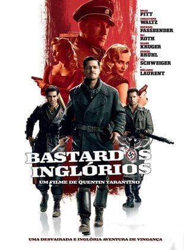
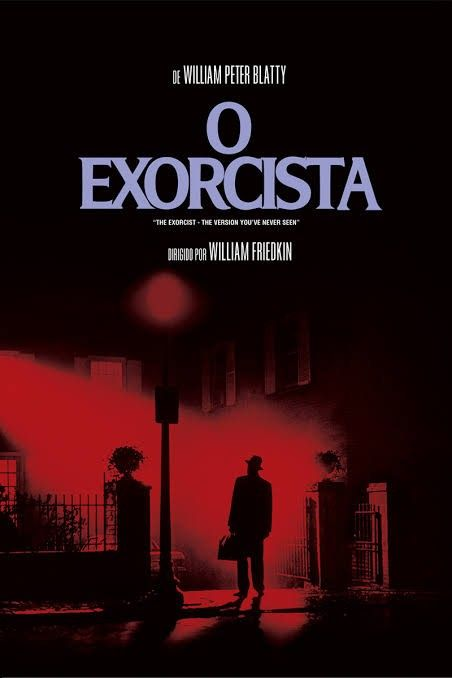
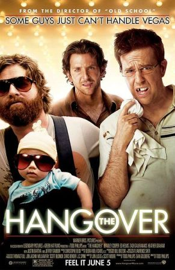

Ano: 2001
Diretor: Peter Jackson
Nota: 8,9
Resumo: Numa terra fantástica e única, chamada Terra-Média, um hobbit (seres de estatura entre 80 cm e 1,20 m, com pés peludos e bochechas um pouco avermelhadas) recebe de presente de seu tio o Um Anel, um artefato mágico e maligno que precisa ser destruído antes que caia nas mãos do mal. Para cumprir sua missão, Frodo terá um caminho árduo pela frente, e ao seu lado estarão outros hobbits, um elfo, um anão, dois humanos e um mago: a Sociedade do Anel.

Um épico fantástisco!
Uma obra-prima de filme. Perfeito. História muito bem elaborada e envolvente. Elenco muito bom e não acho nem um pouco cansativo, mesmo tendo muito tempo de filme. Filme adorável. Vale muito a pena assistir a todos os 3 filmes do senhor dos anéis. Filme épico e um dos melhores de todos os tempos.
Ano: 2009
Diretor: Quentin Tarantino
Nota: 8,4
Resumo: Na primavera de 1944, o Primeiro-tenente Aldo Raine (Brad Pitt) é incumbido da tarefa de selecionar uma equipe de oito soldados judeu-americanos para uma missão atrás das linhas inimigas, que consiste em aterrorizar os soldados alemães. Ele informa os seus soldados de que cada um lhe deve 100 escalpos de nazis.
Simplesmente incrível!
Filme completo, é incrível, nota 10, um dos melhores filmes q eu ja vi, isso se não for o melhor, os diálogos são o ponto forte dessa obra de arte do Tarantino, atuações impecáveis, trilha sonora incrível e muitos detalhes.
Ano: 1973
Diretor: William Friedkin
Nota: 8,1
Resumo: Em Georgetown, Washington, uma atriz vai gradativamente tomando consciência que a sua filha de doze anos está tendo um comportamento completamente assustador. Deste modo, ela pede ajuda a um padre, que também um psiquiatra, e este chega a conclusão de que a garota está possuída pelo demônio.
completamente assustador!
É o melhor dos melhores. Ou melhor dizendo: o mais terrível de todos os filmes do gênero. Nenhum filme desse gênero vai conseguir ser mais chocante e visceral que O Exorcista.
Ano: 2009
Diretor: Todd Phillips
Nota: 7,7
Resumo: Dois dias antes do casamento, Doug (Justin Bartha) e três amigos (Bradley Cooper, Ed Helms e Zach Galifianakis) vão de carro para Las Vegas, para passar uma noite inesquecível. Mas quando os três padrinhos de casamento acordam no dia seguinte, explodindo de dor de cabeça, não conseguem se lembrar de nada..
Filme perfeito!!
Se Beber não case, é um filme extremamente divertido, com uma historia dinamica e divertida, personagens carismaticos e divertidos, e um desenrolar muito bom, cheio de piadas acidas, e situações que ninguem acreditaria, mais aqui nesse filme aconteceram. É um filme pra voce assistir numa sexta de tarde, de forma descontraida e se divertir, mais que é tão divertido, e carismatico que voce vai querer rever ele de novo, recomendo muito esse filme, ele é divertido, com uma premissa simples, mais dinamica, com otimos personagens carismaticos, e um desenrolar muito satisfatorio e dinamico, eu dou uma nota 8,5 pra Se Beber não Case.